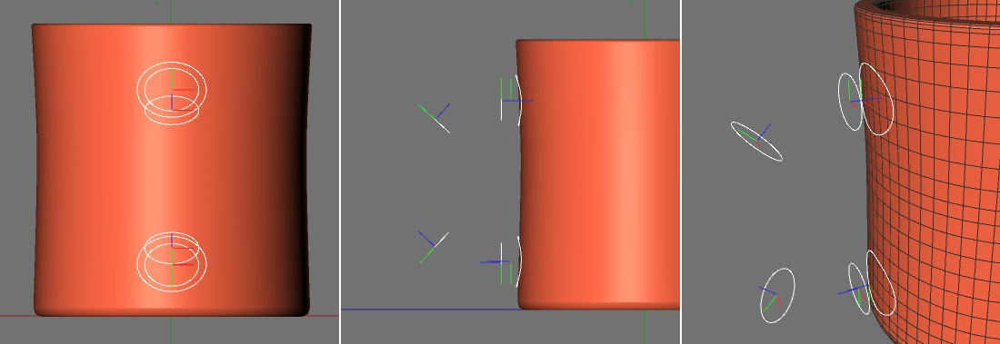
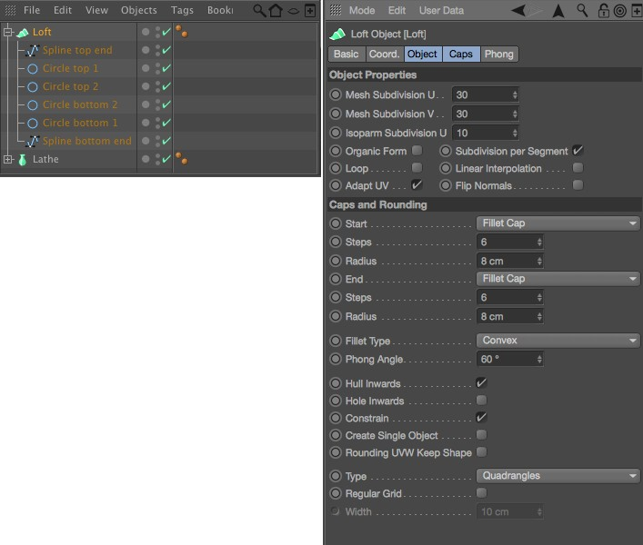
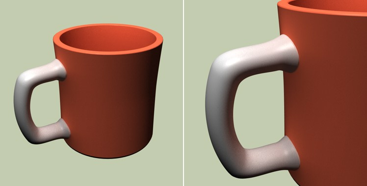

Function available in CINEMA 4D Prime, Visualize, Broadcast, Studio & BodyPaint 3D
Loft Object
The Loft object can be used to create really interesting shapes. Not only can it be used with any number of Splines but also any number of differently shaped Splines. We will use the Loft object to add a handle to the cup we just created using the Lathe object.
First, create a  Circle Spline Primitive and enable its Ellipse option - this will let you modify its shape elliptically. Reduce the Circle Spline’s Radius Y value to create a slight elliptical shape and position the circle in front of the cup in the front viewport where you want the handle to begin. Leave a little space between the Spline and the cup’s outer wall.
Circle Spline Primitive and enable its Ellipse option - this will let you modify its shape elliptically. Reduce the Circle Spline’s Radius Y value to create a slight elliptical shape and position the circle in front of the cup in the front viewport where you want the handle to begin. Leave a little space between the Spline and the cup’s outer wall.
Projecting Splines
In order to match the Spline’s to that of the cup we will project it onto the cup. First, the Spline must be made editable (c key). After doing so, select the function  Project(). In the Attribute Manager, leave the Mode option set to View (assuming you are still in the front viewport - if not, then switch to it now) and click on the Apply button to project the Spline. The Spline will be projected onto the cup’s surface without having to manually move a single point.
Project(). In the Attribute Manager, leave the Mode option set to View (assuming you are still in the front viewport - if not, then switch to it now) and click on the Apply button to project the Spline. The Spline will be projected onto the cup’s surface without having to manually move a single point.
Copy the Spline, rotate the copy 180° around its X axis and place it at the bottom of the cup where the handle should end. Project this Spline onto the surface of the cup. Now both ends of the Loft object we want to create have been defined. Next we will add a few more ellipses that the Loft object will follow to shape the handle. Create four additional Splines and position them as shown in the image below. Note the orientation of each ellipse’s axis.

Applying a Loft object
Create a  Loft and make the previously creates Splines Child objects of this Loft object. Make sure the Splines are placed in the correct hierarchical order, from top Spline to bottom Spline, in the 对象管理器. Naming your objects accordingly will help keep a better overview of which object is where. To rename an object simply double-click on its name in the 对象管理器. In addition to the order of the Splines themselves, the order of the points within a Spline also plays a role in the generation of the Loft object surface. The first point of the first Spline will be connected with the first point of the second Spline and so on. If Splines run in different directions the loft surface can be twisted. The Loft object is the only Generator object for which the Intermediate Points of Splines (Child objects) do not play a role. Instead, the Loft object uses a unique, uniform subdivision in the rotational direction of the Spline (Mesh Subdivision U) and in the direction of the Spline’s cross-section (Mesh Subdivision V). If the Subdivision per Segment option is enabled the Subdivision V will be generated between neighboring Splines. Otherwise a uniform subdivision will be generated over the entire Loft object surface. Since all parameters can be modified at will you can experiment with them until you achieve the desired result. The image below illustrates our scene’s current structure in the 对象管理器 and an example of how parameters can be defined in the Attribute Manager.
Loft and make the previously creates Splines Child objects of this Loft object. Make sure the Splines are placed in the correct hierarchical order, from top Spline to bottom Spline, in the 对象管理器. Naming your objects accordingly will help keep a better overview of which object is where. To rename an object simply double-click on its name in the 对象管理器. In addition to the order of the Splines themselves, the order of the points within a Spline also plays a role in the generation of the Loft object surface. The first point of the first Spline will be connected with the first point of the second Spline and so on. If Splines run in different directions the loft surface can be twisted. The Loft object is the only Generator object for which the Intermediate Points of Splines (Child objects) do not play a role. Instead, the Loft object uses a unique, uniform subdivision in the rotational direction of the Spline (Mesh Subdivision U) and in the direction of the Spline’s cross-section (Mesh Subdivision V). If the Subdivision per Segment option is enabled the Subdivision V will be generated between neighboring Splines. Otherwise a uniform subdivision will be generated over the entire Loft object surface. Since all parameters can be modified at will you can experiment with them until you achieve the desired result. The image below illustrates our scene’s current structure in the 对象管理器 and an example of how parameters can be defined in the Attribute Manager.

The image below shows the rendered Loft object. The Splines were adjusted further to refine the shape of the handle. To do so, simply select one of the Splines used to create the Loft object and move, rotate or scale it accordingly.

Here you can take a look at the result:
Continue …
{kind=link}
{kind=link}